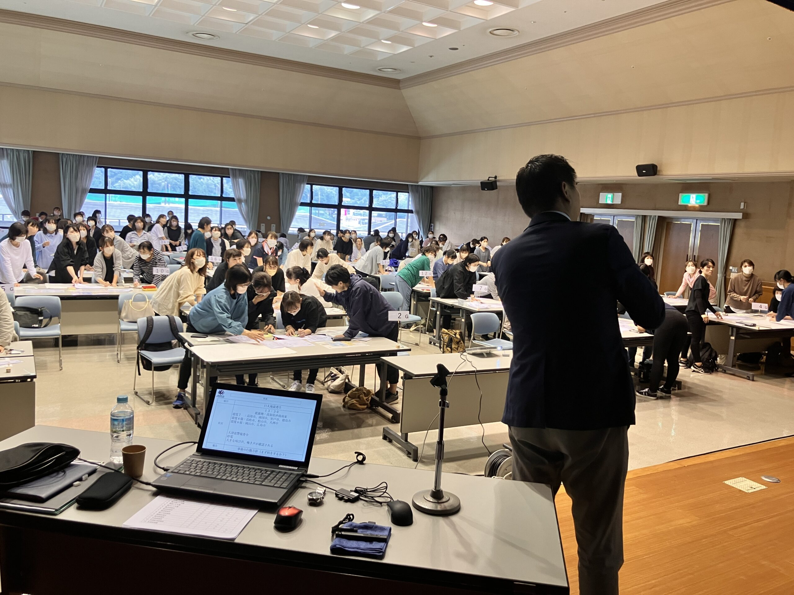
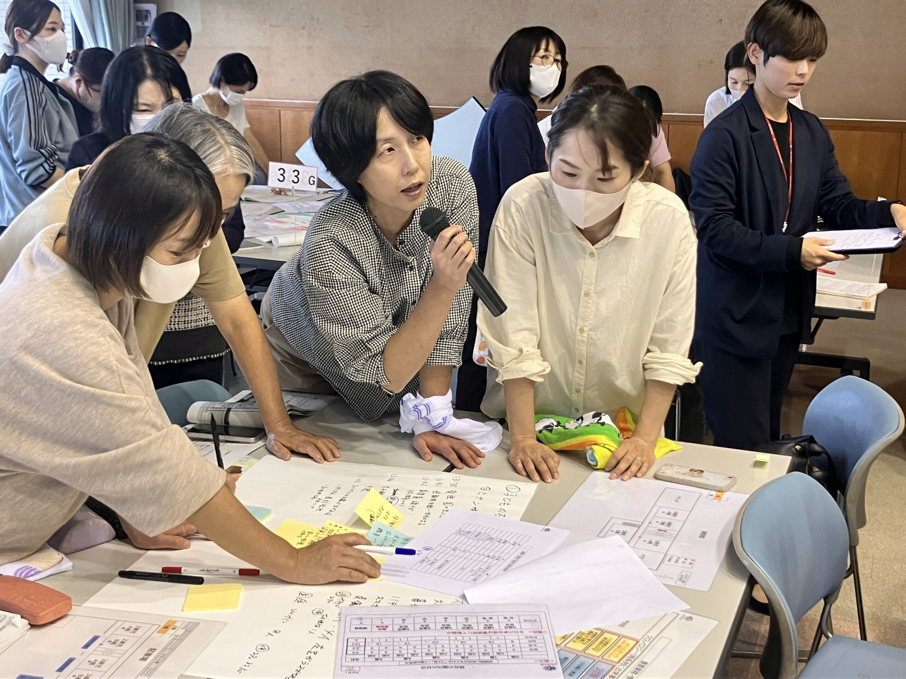
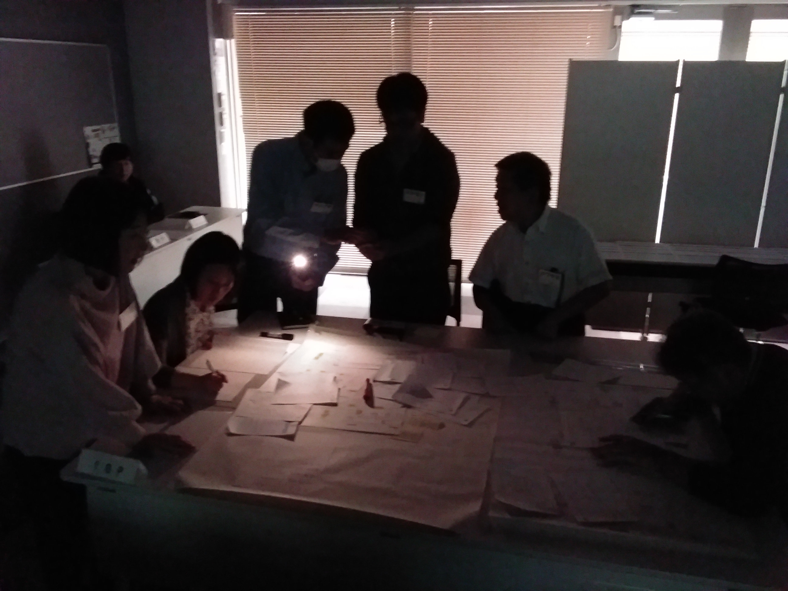
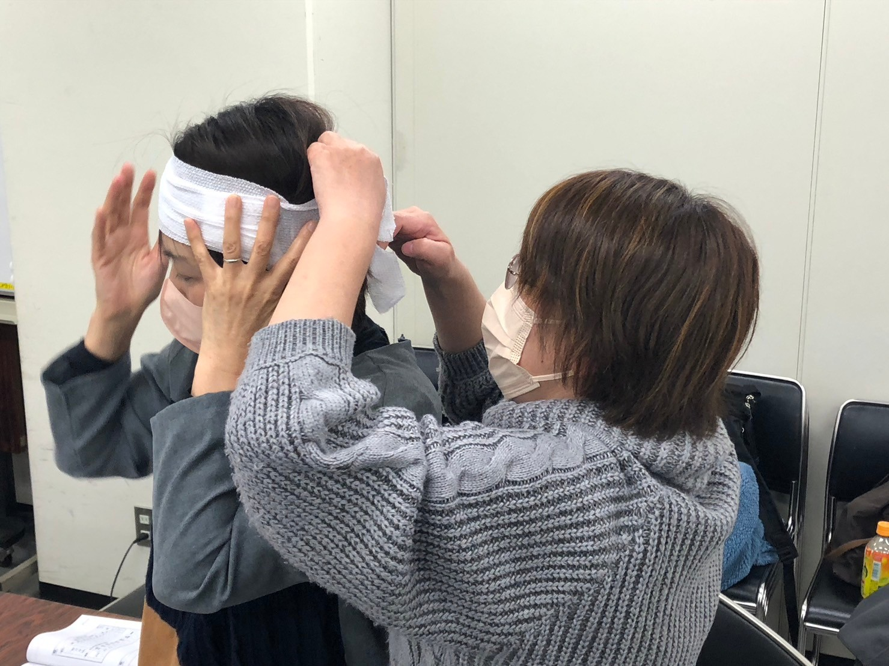

保育系施設は、
ＢＣＰ（事業継続計画）の策定が努力義務期間中です。
準備はできていますか？ 今すぐ取り組みを始めてください。
保育施設には自分では避難できない乳幼児が集まっています。災害時には職員が冷静に動き、子ども全員の安全を確保しながら保護者への引き渡しを完了するまでが使命です。そのためにＢＣＰ策定と訓練が不可欠です。

「訓練はしているけど、本当に動けるか不安」という声を多く聞きます。リスクを正確に把握し、実践的な対応手順を整備することが重要です。
JDRSが保育施設と取り組んできた経験から、特に重要な１０のポイントをご紹介します。


机上訓練から実地訓練まで段階的に実施。保育士の方々が自信を持って行動できるよう、実践的なプログラムを提供します。
施設の種別・規模・運営主体を問わず、それぞれの環境に合わせたＢＣＰ策定・訓練を提供しています。
